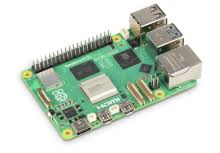

Description dES Caractéristiques
Le Raspberry Pi dispose de 40 broches GPIO qui permettent de connecter divers composants. Elles fonctionnent en entrée pour lire des signaux de capteurs ou en sortie pour contrôler des dispositifs comme des LED. Fonctionnant à 3,3V, elles nécessitent parfois des convertisseurs de tension pour des composants 5V. Certaines broches supportent les protocoles I2C, SPI, et UART pour communiquer avec d'autres appareils. Le PWM permet de gérer la vitesse de moteurs ou la luminosité des LED. Chaque broche fournit un courant maximum de 16 mA, avec un total limité à 50 mA
